Warzone interface audit
4 November 2026 · Released v5.0 · 1280×800 and 1080×600 emulator viewports
Audit first. No redesign or repaired APK is claimed. Findings distinguish confirmed screens, code risks and unresolved reports. Research is retained.
Detailed text report · Findings data
Issues before implementation
F1 · BUILD opens the wrong interface
High · Confirmed
The top BUILD button selects nearby constructors and opens the original left construction sidebar. Building choices are absent from the intended top interface. open('build') immediately routes to openBuild(), which sends native-menu/build; renderBuild() is bypassed.
Code: app/src/main/assets/warzone-command-pages.js:121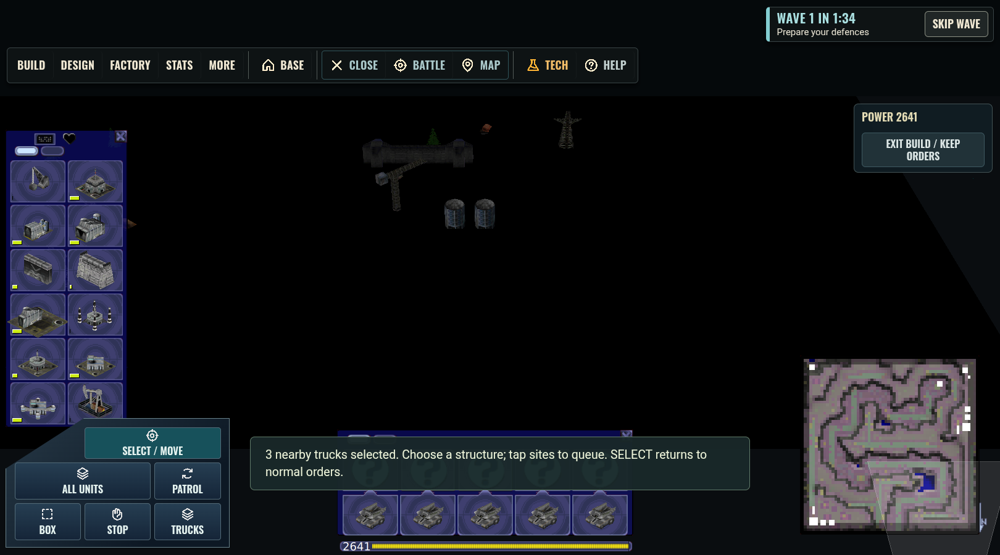
F2 · Grey Android component and factory popups
High · Confirmed
Body and factory choices open a light Android/WebView select popup over the dark game panels. This reproduces the reported grey popup. HTML select controls create these OS surfaces; styling the closed select does not theme the open popup. Their appearance needs an integrated game chooser in the later redesign.
Code: app/src/main/assets/warzone-command-pages.js:187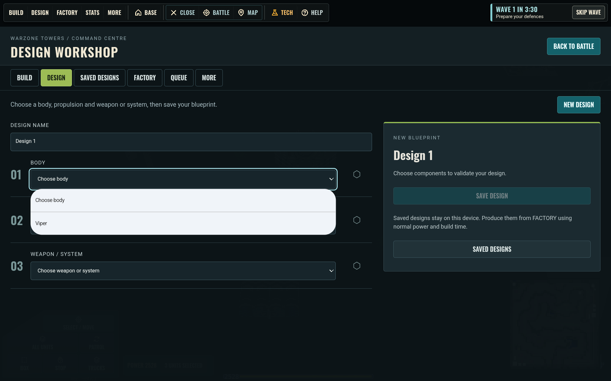
F3 · Stacked navigation consumes too much screen
High · Confirmed
Battle toolbar, large page title, a second navigation row and introductory text remain stacked. At 1080x600 the page content starts at y=237.875: almost 40% of the screen is consumed before the working area. The command strip alone is 104px high. The designer's weapon field is below the initial visible area.
Code: app/src/main/assets/warzone/ui/command-pages.css:6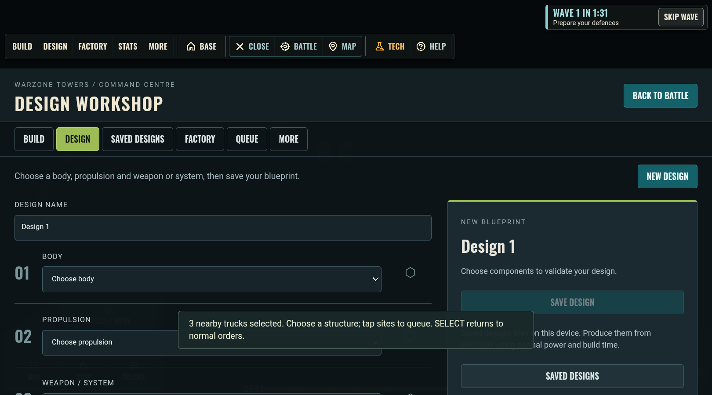
F4 · Factory hides basic units behind the saved library
High · Confirmed
All researched saved designs render before existing native templates. With the populated emulator library, basic constructors and their PRODUCE button are below multiple rows. A visible click after deliberately scrolling successfully queues a constructor; the problem is discoverability and layout, not proof that the production engine is broken.
Code: app/src/main/assets/warzone-command-pages.js:198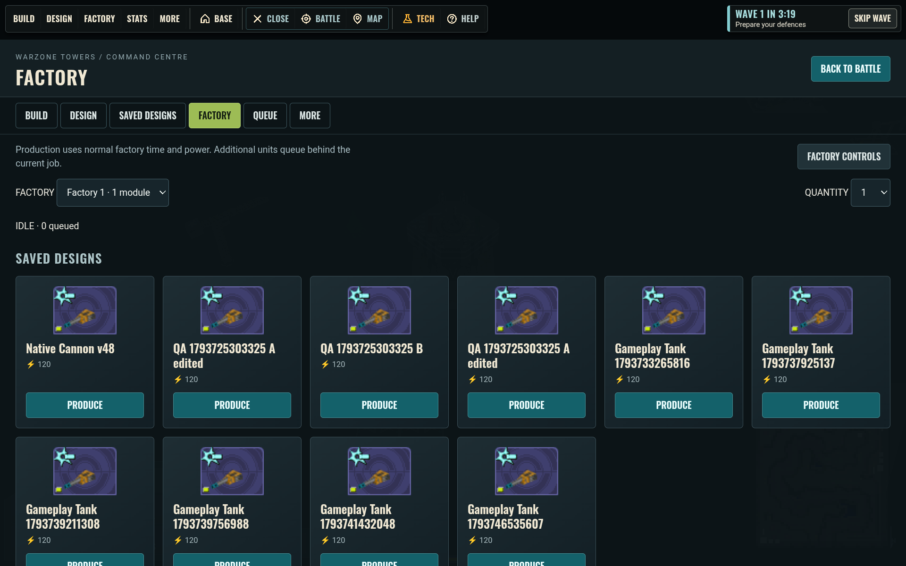
F5 · Saved-design PRODUCE loses the selected design
High · Code-confirmed and navigation observed
The button stores state.selected and opens Factory, but state.selected has no reader elsewhere in this module. Factory neither selects, highlights nor scrolls to that design and does not queue it. The user must find it again. The control needs a clear handoff to the chosen design and explicit production confirmation.
Code: app/src/main/assets/warzone-command-pages.js:405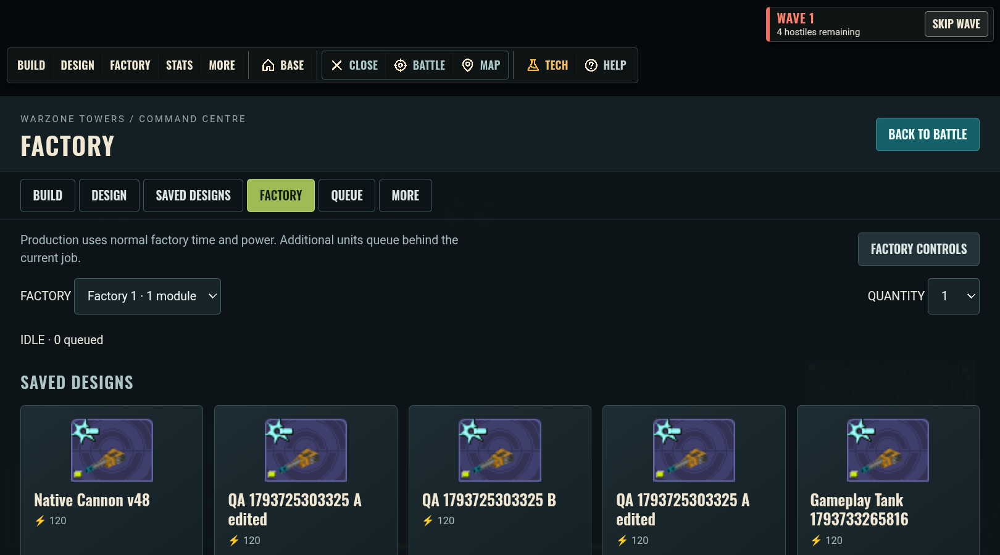
F6 · BUILD QUEUE is an instructions page rather than a queue
High · Confirmed with code
The screen contains explanatory text, another BACK TO BATTLE button and NATIVE BUILD MENU, but no order list or progress. renderQueue() never reads native pending work. The old queueRows() belongs to the unused legacy route. This does not satisfy the screen's label.
Code: app/src/main/assets/warzone-command-pages.js:209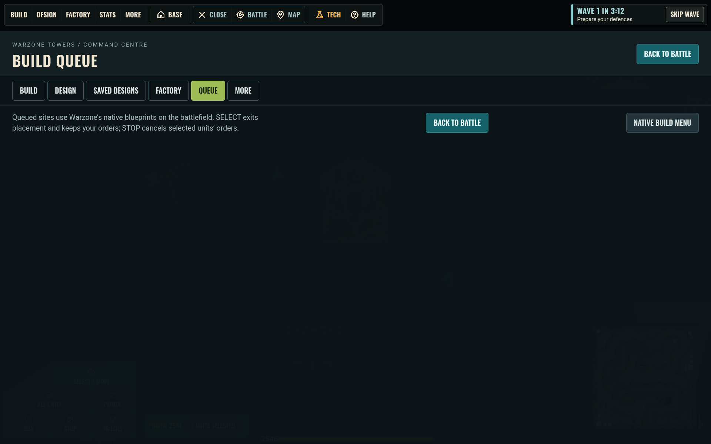
F7 · MORE duplicates controls already available in battle
Medium · Confirmed
MORE repeats ALL, PATROL and BOX and adds another full page. It appears in both navigation rows. Removal is a stated requirement. Commanders and control size still need an explicit home so removing the button does not silently remove those functions.
Code: app/src/main/assets/warzone-command-pages.js:212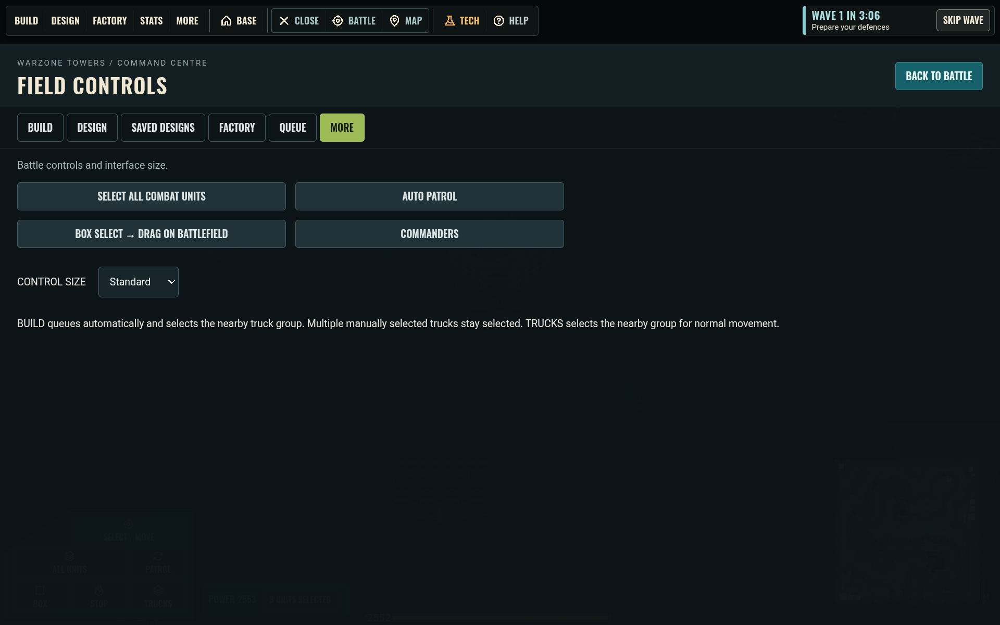
F8 · Battle messages obscure Design
Medium · Confirmed
The constructor-selection toast remains over the designer after navigation; a production toast also overlays an edited design. notify() always shows a fixed floating toast. These messages should be scoped to the active screen or its status area.
Code: app/src/main/assets/warzone-command-pages.js:71F9 · Underlying battle controls show through page panels
Medium · Confirmed
The page background is translucent and the field console remains rendered underneath it. Ghosted selection buttons and power/status text add visual noise to Design, Factory, Queue and Saved. Research already hides these controls and should retain its design.
Code: app/src/main/assets/warzone/ui/command-pages.css:3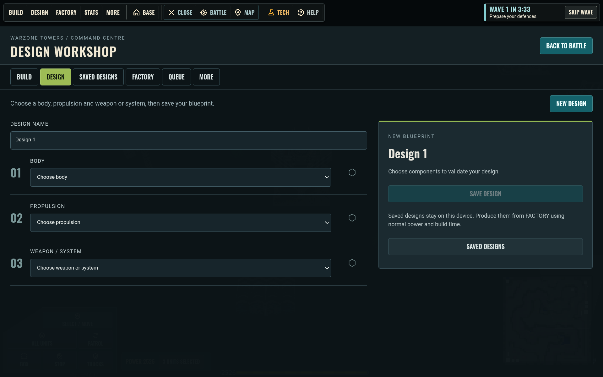
F10 · Cards do not communicate the assembled unit
Medium · Confirmed
Factory and Saved cards mainly show a weapon research icon. Similar designs therefore look identical. In a populated design the selected Viper body and Wheels still show generic hexagon fallbacks. Large cards and repeated text amplify the webpage appearance rather than helping compare units.
Code: app/src/main/assets/warzone-command-pages.js:206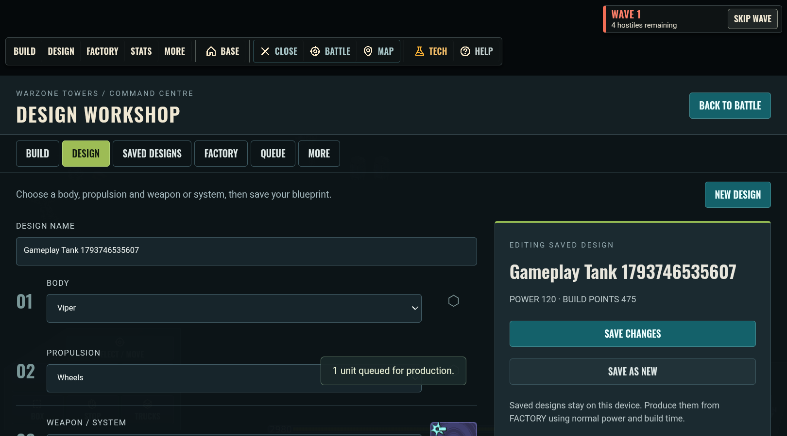
F11 · Design deletion and draft replacement have no recovery step
Medium · Code finding; destructive action not exercised
DELETE immediately filters the saved library and persists it, with no undo or confirmation. NEW DESIGN immediately resets the current draft. A failed deletion persistence restores the list silently. These need protection or clear recovery in the functional pass.
Code: app/src/main/assets/warzone-command-pages.js:404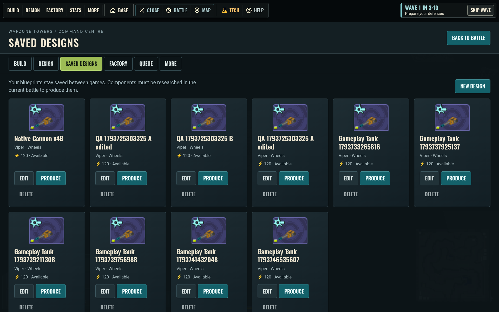
F12 · Factory queue-clear/retry failures are ignored
Medium · Code finding; rejection not injected into live match
The clear-production/retry-production handler requests state after any reply without checking reply.ok or displaying reply.reason. A rejection can look like an unresponsive button. Successful production requests already have error handling; this handler should be consistent.
Code: app/src/main/assets/warzone-command-pages.js:413F13 · Startup/header positioning still needs a targeted fix
High investigation · User report unresolved; code and runtime warning found
The reported upward/offscreen shift was not reproduced in captured geometry: no negative header top or host scrolling was recorded. Code splits header sizing across Android fitViewport(), host 50/94px rules, CSS top=7/51px and JS measured minimums 56/100px. A ResizeObserver loop warning was logged on replay startup. This is a concrete layout-maintenance problem, but it is not proof of the user's exact root cause and must not be marked fixed.
Code: app/src/main/java/com/rbabbit/blocknight/warzone/MainActivity.java:292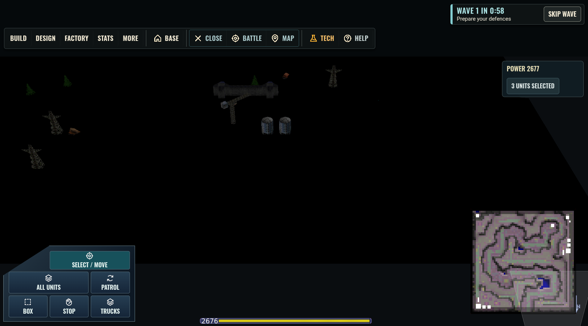
F14 · An equivalent constructor appears twice after production
Medium · Confirmed
The native-template section shows both Truck Viper Wheels and Truck Viper Wheels · F160157, each costing 62 power, after a constructor production request. The original stock template and generated factory template are both exposed. Existing deduplication does not merge this stock/generated pair. The production chooser should present one equivalent unit choice.
Code: scenario/warzone-towers-commands.js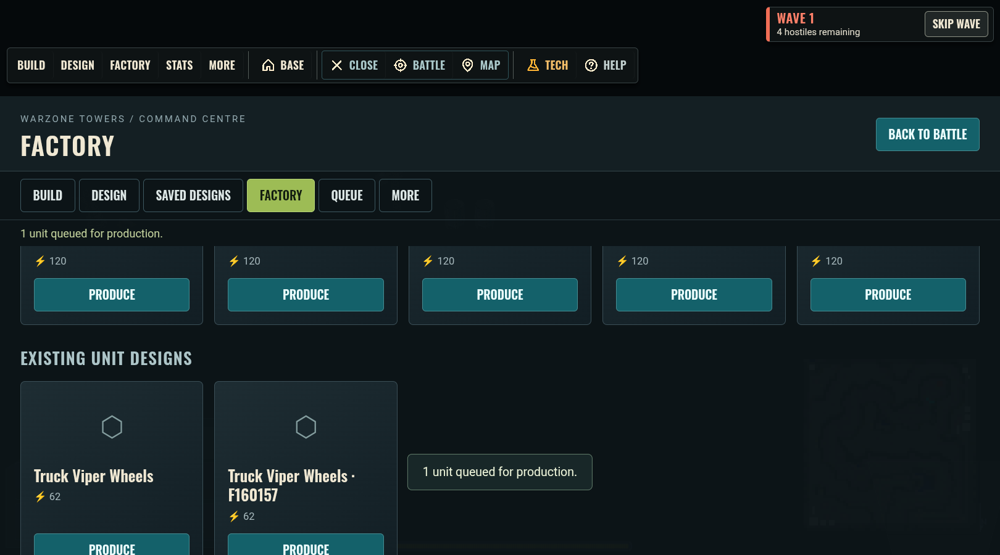
Steps and health
| Step | Interaction | Health | Screenshots |
|---|
| 1 | Battle entry / late startup | Partial: header geometry captured; first wide image is transitional, not a stable reference | 1280×800 / 1080×600 |
| 2 | BUILD | Wrong interface: native sidebar rather than top choices | 1280×800 / 1080×600 |
| 3 | Design overview | Crowded; compact weapon choice below initial view | 1280×800 / 1080×600 |
| 4 | Body picker | Grey native popup reproduced | 1280×800 / 1080×600 |
| 5 | Name field focus | Focus visible; software keyboard absent, occlusion unverified | 1280×800 / 1080×600 |
| 6 | Back after name focus | Geometry retained; not proof of actual keyboard dismissal | 1280×800 / 1080×600 |
| 7 | Return from Design | Battlefield and controls visible at both sizes | 1280×800 / 1080×600 |
| 8 | Factory overview | Crowded library hides native units below saved designs | 1280×800 / 1080×600 |
| 9 | Factory picker | Same native popup mismatch | 1280×800 / 1080×600 |
| 10 | Initial production attempt | Rejected as proof: offscreen control was missed; superseded by edge check | 1280×800 / 1080×600 |
| 11 | Construction queue page | No actual queue rows: instructions only | 1280×800 / 1080×600 |
| 12 | Saved designs | Renders; large repeated cards and unsafe delete handler | 1280×800 / 1080×600 |
| 13 | MORE | Redundant controls; removal remains required | 1280×800 / 1080×600 |
| 14 | Research | Layout coherent at both sizes; retain design | 1280×800 / 1080×600 |
| 15 | Return from Research | Battlefield and controls restored | 1280×800 / 1080×600 |
| 16 | Help | Readable and scrollable; text references current sidebar/MORE and needs later updating | 1280×800 / 1080×600 |
| 17 | Return from Help | Battlefield and controls visible | 1280×800 / 1080×600 |
| 18 | Saved PRODUCE handoff | Selected design lost in Factory; edge capture only | 1080×600 |
| 19 | Visible native-template production | Actual accepted queue request; equivalent constructor cards duplicated | 1080×600 |
| 20 | Edit populated design | Component values and validation visible; body/propulsion fallback art | 1080×600 |
| 21 | Edge return / replay | Final edge return interrupted by replay; not a passed return check | 1080×600 |
Limits and diagnostics
- This is an audit, not a redesigned or repaired APK. App source and version remain v5.0.
- The emulator contains a populated library from earlier QA. These names are emulator data, not bundled starter designs.
- Name-field focus was captured, but the software keyboard did not visibly open, even with show_ime_with_hard_keyboard enabled. Keyboard occlusion and viewport restoration are not certified by those captures.
- The first wide battle capture contains a selecting overlay and is rejected as a stable startup reference. Stable battle returns are available in steps 7, 15 and 17.
- The initial step-10 captures show IDLE: an offscreen production button was not actually clicked. They are rejected as production proof. The later edge capture scrolls only the content pane, verifies a visible hit target and confirms a native factory active/queued job.
- The edge run completed navigation to Factory and a real queue request, then reopened a populated design. Its final return was interrupted by a replay. The replay URL marker and Java replay handler explain the reload; this is not certified as a random menu-return crash. Game-over overlay appearing over an in-progress tap is a code risk because any click on the native full-screen panel starts replay.
- Logs contain the existing WASM streaming compilation TypeError followed by ArrayBuffer fallback, GFXSTREAM warnings and a ResizeObserver loop warning. No clean-console claim is made.
- A native System UI not responding dialog was dismissed at launch. It is an emulator system failure, not attributed to the game.
- Black terrain remains on this emulator. Physical Samsung, audible output, every research/module/late-game state and full accessibility compliance are outside this pass.